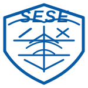

SESE B
Segon enfrontament: el JBF va guanyar 68–63 a La Colina el 31 d’octubre.
Classificació6è
Balanç2–6
PF/P54,4
PC/P59,4
DIF/P−5,0
Anàlisi del rival · Temporada 26-27
Diumenge 22 de novembre · 17:45 · Pavelló Municipal Virrei Amat · Partit a fora.

Segon enfrontament: el JBF va guanyar 68–63 a La Colina el 31 d’octubre.
Resultats previs disponibles i precedent directe.
| Data | Condició | Rival | Resultat |
|---|---|---|---|
| 31/10/2026 | Fora | JBF | 63–68 |
| 01/11/2026 | Casa | TGN Bàsquet F10A | 59–62 |
| 17/10/2026 | Fora | U. B. Llefià B | 50–40 |
| 11/10/2026 | Casa | Nayox Força Lleida B | 32–57 |
| 27/09/2026 | Casa | CB Blanes A | 54–55 |
A La Colina el SESE va competir fins al final: preparar un partit de possessió a possessió.
Punts de partida per al segon partit, amb SESE com a local.
El SESE concentra bona part del seu volum prop de cistella. Prioritat: contenir la primera penetració i tancar el rebot defensiu.
Fer circular la pilota, buscar avantatges clars i no regalar possessions. El seu ritme interior convida a castigar els espais oberts.
El precedent va ser de cinc punts. Mantenir comunicació, controlar les faltes i executar bé l'últim tram de cada quart.
Base inicial per a la preparació de la setmana.
Les observacions es comparteixen amb tot l’staff del JBF.